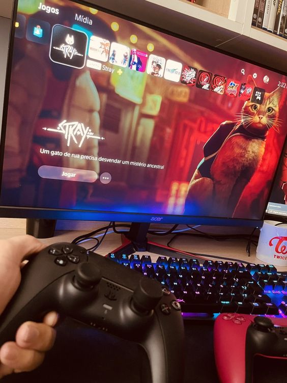
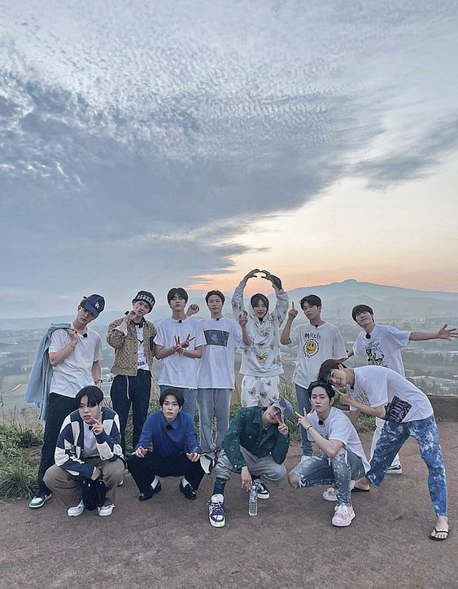
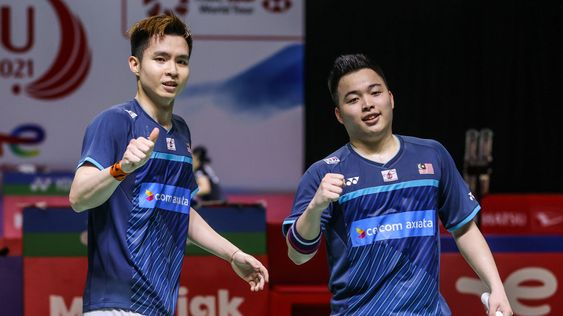

B I O D A T A
Assalamualaikum, My name is Zulaikha Zamira Binti Abidin. I am a final semester information management diploma student at the Kelantan branch of Universiti Teknologi MARA. Because my birthdate has yet to arrive, so I am not officially 21 this year yeaaa!!!. . I was born in Pasir Puteh and grew up there as well. I am the youngest of twelve siblings. My hometown is Yala, Thailand, because my father is from there, and we always visit my grandparents and other relatives there frequently
  
My hobbies include singing songs of many genres and playing badminton . These two activities will be done daily and whenever I feel stressed while studying. Because I have a quick temper, music helps me relax. I also like to cook and play games. Following that, my favourite hobby is purchasing and collecting K-pop music albums. The price may be exorbitant, but I am willing to invest money in this since I am interested, and I can also create a business with my collection. I make money from my kpop music collection by selling old records as I become tired of them and do not like the group anymore. Treasure from YG Entertainment is indeed my favourite K-pop group. They appeal to me since they have many great songs and are easy to listen to.